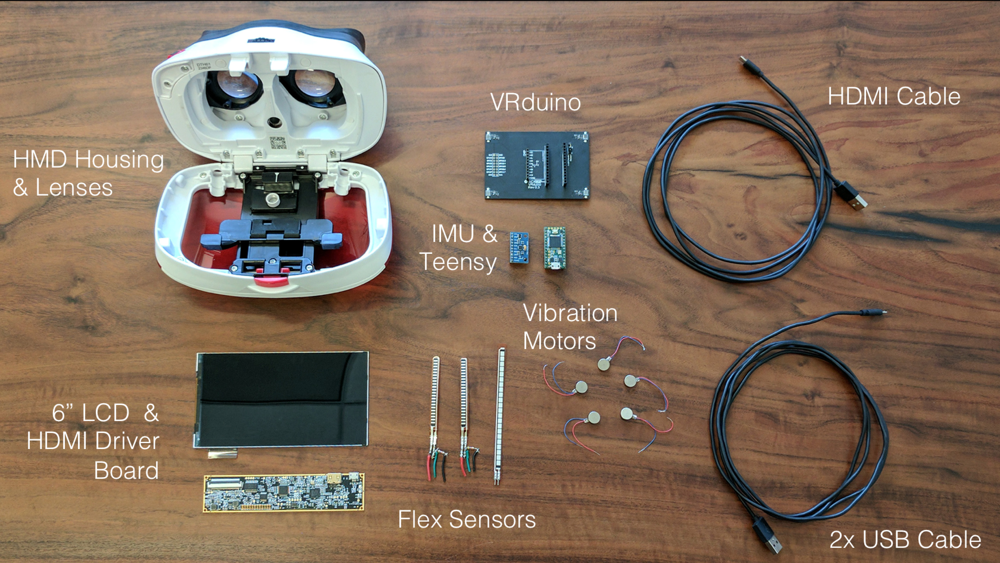

The EE267 uses custom hardware for position tracking. This shield for the Teensy provides the proper support circuitry for the photodiodes used with the HTC Vive Lighthouses. For the EE267 class, we provide hardware to students in the kits. If you would like to build your own VRduino tracker board, the manufacturing files are available here. We will update the manufacturing files as the hardware continues to develop.
We also wrote a plugin script for Unity that you can import in your Unity project to read data directly from the VRduino (or any Arduino) via a USB serial connection. You can download this script here.
| Hardware Components | Model | Links | Info | Alternatives | Comments |
|---|---|---|---|---|---|
| HMD Housing | View-Master Deluxe VR Viewer | Amazon | Google Cardboard, Durovis Dive, etc. | Nice and sturdy, can adjust focus. Need to drill one of the cable holes open to route USB/HDMI cables into it. |
|
| Display | Topfoison 6'' 1080p LCD | Topfoison | [Spec Sheet] | Difficult to get at low cost with reasonably high resolution and driver board. Check Alibaba! | Comes with HDMI driver board. Get without audio jack due to poor mechanical design. |
| IMU | InvenSense MPU-9250 | Amazon | [Datasheet] [Register Map] | Lower-cost models with fewer DOF are available. | Low cost, small-scale, high-quality 9DOF IMU with breakout board. 3DOF gyro, 3DOF accelerometer, 3DOF magnetometer. |
| Microcontroller | Arduino Teensy 3.2 | PJRC | Other microcontrollers or FPGAs with more than 8 configurable pin change interrupt vectors. |
Small, low-cost, easy to use, great support, tons of libraries. | |
| Cables | 2x USB cables (for Arduino & LCD driver board power) and HDMI-to-mini HDMI |
Amazon | Using the ultra-thin versions is nice if available. May need "high speed 4K" option for the HDMI cable. | ||